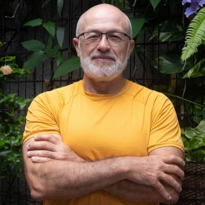

Inteligência Coletiva & Engenharia de Futuro
🚀 Testar no ChatGPTSilvio Meira é cientista da computação, professor e empreendedor brasileiro, amplamente reconhecido por sua liderança em engenharia de software, inovação e transformação digital. Atualmente, ele é a figura central por trás da TDS Company e do Porto Digital, focando sua visão estratégica em como a tecnologia reorganiza as instituições e o comportamento social no Brasil.
Sua marca registrada é a capacidade de traduzir complexidade tecnológica em estratégia de negócio. Menos "evangelista" e mais um intérprete profundo, Meira ajuda o mercado a entender que inovação não é adoção de ferramentas, mas mudança estrutural na cultura e nos modelos de valor.
O pipeline Silvio Meira Digital utiliza técnicas avançadas de processamento de dados para garantir fidelidade e contexto. Conheça as principais:
Para lidar com SPAs e carregamentos assíncronos, utilizamos o Playwright. Ele garante que todo o conteúdo figital seja capturado após o render completo do DOM.
await page.goto(url, { waitUntil: 'networkidle' });
PR Melhore nossa extração. Faça seu Pull Request! →
Integramos o Ollama (Llama 3) para transcrever áudios e vídeos. A IA não apenas transcreve, mas formata o texto em Markdown estruturado com semântica rica.
ollama run llama3 "Transcreva este áudio em Markdown..."
PR Otimize nosso prompt de transcrição. Contribua com um PR! →
Limpamos o ruído das páginas (menus, footers, anúncios) usando seletores avançados e expressões regulares para manter apenas o "corpo" do pensamento de Silvio Meira.
re.sub(r'[\n]{3,}', '\n\n', cleaned_text)
PR Ajude a refinar nossos filtros de limpeza. Faça seu Pull Request! →
Dividimos a base unificada em chunks inteligentes para respeitar os limites de contexto do Custom GPT, garantindo respostas precisas e sem perda de histórico.
LIMITE_TAMANHO = 5_000_000 # 5MB per chunk
PR Melhore nossa lógica de segmentação. Contribua via PR! →
O objetivo final é criar um Custom GPT que sirva de mentor estratégico para startups. Sua contribuição é vital para que essa inteligência seja o mais fiel possível.
Abrir um Pull Request no GitHub